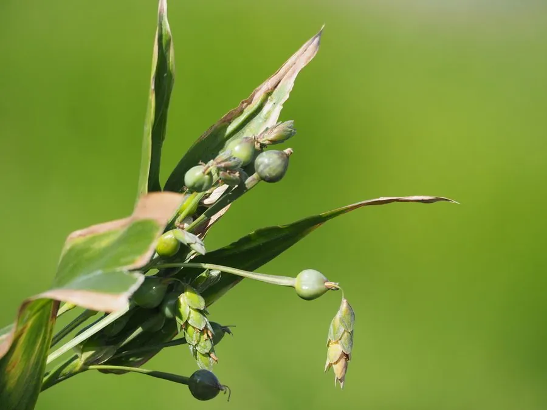

农作物与经济植物 · 植物界
薏苡 Coix lacryma-jobi

禾本科一年生草本，种子卵形、外壳坚硬光亮，去壳后即薏米，可煮粥入药，原产亚洲热带，中国栽培历史悠久。
- 分类
- 门被子植物门纲木兰纲目禾本目科禾本科属薏苡属
- 栖息环境
- 温暖湿润的田边、沟谷与旱地，喜光、不耐寒
- 地理分布
- 原产亚洲热带，中国长江流域及以南广泛栽培，日本、东南亚也有种植
- 保护级别
- 暂无评估；栽培作物，种质资源由各地农家品种保存
物种志
薏苡为禾本科薏苡属一年生草本，株高 1–1.5 米，茎秆粗壮直立，基部节上生根。叶片长披针形，宽大，中脉明显。总状花序自叶腋抽出，雌小穗包裹在骨质总苞内，雄小穗位于花序上部；总苞卵形，长 8–12 毫米，成熟时坚硬光滑，呈灰白、蓝紫或黑褐色，形如念珠，花期 7–9 月。
薏苡原产亚洲热带地区，中国栽培历史可追溯至新石器时代，长江流域及以南各地广布。去壳后的种仁即薏米，富含淀粉与蛋白质，可煮粥、酿酒，中医认为其能健脾利湿、除痹止泻。坚硬的总苞在民间被串成念珠，故有“菩提子”之称。栽培喜温暖湿润、阳光充足，多直播或育苗移栽，需注意防治黑穗病；成熟期不一致，常分次采收。
形态与习性
- 原产地亚洲热带地区，中国南方栽培历史悠久
- 株高1–1.5 米，茎秆粗壮直立
- 生育期一年生，花期 7–9 月，果期 9–11 月
- 用途薏米煮粥酿酒，总苞作念珠，根茎入药
- 栽培喜温湿、向阳，直播或育苗移栽
- 采收成熟不一致，分次割穗脱粒
趣味知识
- 薏苡坚硬光亮的种子常被串成手串，市面上所说的“菩提子”很多就是它的总苞。
- 薏米并非真正的米，而是薏苡去壳后的种仁，淀粉含量高，常与红豆同煮。
- 它的雌小穗被骨质总苞包裹，这种结构在禾本科中相当少见。
- 中国浙江河姆渡等遗址曾出土薏苡遗存，说明它的利用史已有数千年。